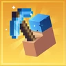
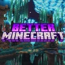
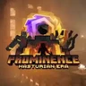

Modpack picks.
Popular packs from Modrinth that we like. Search a pack's name in Nightfall's modpack browser to install it.
Faster game
Fabulously Optimized
Better graphics and smoother FPS with options you already know. A great first pack.
View on ModrinthAdditive
A modern, open-source alternative to OptiFine, for Fabric.
View on ModrinthVanilla, but better
Vanilla Perfected
Vanilla Plus mods and packs that improve the game without changing how it feels.
View on Modrinth
Fresh & Smooth
Smoother animations and fresher looks, all client-side.
View on ModrinthAdventure

Better MC [FABRIC] - BMC2
A big Vanilla Plus pack with new biomes, structures, mobs and more.
View on Modrinth
Prominence™ II: Hasturian Era
A story-rich RPG pack with a talent tree, artifact weapons and boss fights.
View on ModrinthSomething different
Cobblemon Official Modpack [Fabric]
The official Cobblemon pack: catch, train and battle creatures in Minecraft.
View on ModrinthCreate+
A light Vanilla Plus pack built around Create and its add-ons.
View on ModrinthNames, icons and download counts come from Modrinth. These packs are made by their own creators, who aren't affiliated with Nightfall.
- In Nightfall, open the modpack browser and search the pack's name.
- Pick the version you want and install it. Mods and dependencies download by themselves.
- Already have a .mrpack or CurseForge .zip? Import it instead.
Ready when you are.
Download Nightfall, or come say hi on Discord. Bug reports, ideas and screenshots are all welcome.